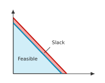
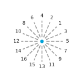
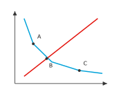

Region and point labels
A label identifies a filled region or point that has already been drawn. Deferred passes draw label layers after every other layer, when all obstacles are known. Point labels are placed before region labels, and each placed label becomes an obstacle for subsequent labels.
Region labels
RegionLabelLayer(
region,
text,
short_text=None,
placement="auto",
style=None,
stroke=Stroke(width=0.8),
*,
role="text",
...
)Inside the region when the text fits, centred on its pole (Signed distance and pole), trying short_text second; otherwise a callout with text.
As "auto", but when neither text fits, short_text (or text) is centred on the pole regardless.
Always a callout: unboxed text outside the region and a thin leader from the pole to the text.
Labels a filled region, specified by the id of a FillLayer or by a
polygon with at least three points. stroke sets the callout leader style.
A text fits inside when its rectangle, padded by 2 pt on each side and centred on the pole, lies in the region (Rectangles in polygons) and touches no line, marker, text or other region. An inside label and a callout. shows both outcomes.

Point labels
PointLabelLayer(
point,
text,
style=None,
*,
role="text",
...
)Places text beside a point without a leader. The point's footprint is its marker when one is drawn there, or the bare point otherwise.
The label tries 16 directions around the footprint at gaps of 4, 7, 11 and
16 pt from its edge, starting with the nearest gap. Within each gap, it
tries the directions in the order defined by Candidate order
(The order in which directions are tried.). It uses the first position that covers nothing. If every
position has violations, it uses the earliest position among those with the
fewest and emits a LayoutWarning naming the layer. A region is not an
obstacle when the point lies strictly inside it, more than 1.5 px from its
edge, because that is where the label belongs.
Definition · Candidate order
Number the directions \(k = 0, \ldots, 15\) counter-clockwise from \(+x\), at angles \(2 \pi k / 16\). Point labels try them in increasing order of the key \((\min(s, 16 - s), [s > 8])\) with \(s = (k - 2) \mod 16\): by angular distance from the upper-right direction \(k = 2\), and among two directions at the same distance, the counter-clockwise one first.


Hard constraints
Both kinds of label must cover nothing. Obstacles are collected from the
content on the axes: path segments, marker and text rectangles, and filled
region polygons. The searches below are defined in
mosaickit.layout.placement; all except place_beside are also exported
from mosaickit.layout. Like the geometry functions, they work in display
pixels. scale converts their point-based gaps to pixels.
Obstacles records what a label must avoid. Placement records the
resulting rectangle, the leader segment (None for a label without one)
and the number of violated constraints.
Obstacles.extended(segments=..., rects=...) adds the label just placed.
Definition · Violations
For a candidate rectangle \(R\), obstacles \(O\), plot bounds \(B\) and a set of polygons \(\mathcal{P}\), the violation count is
where \([\cdot]\) is 1 for a true condition and 0 otherwise. A candidate covers nothing when \(V(R) = 0\).
Each term is computed exactly by Segments and rectangles, by
Rect.intersects and by Rectangles overlapping polygons.
Callouts
place_callout(
polygon,
size,
obstacles,
bounds,
*,
scale=1.0
) -> PlacementSearches around a region for a callout of the given size. For each of 16
directions \(r\) from the pole \(o\), it places a candidate rectangle at
distance ray_exit(o, r, P) plus a gap of 12, 24 or 40 pt (the near
ring). The side or corner facing the pole anchors the rectangle, so it
extends away from the region. The leader runs from the pole toward the
rectangle's nearest point (Nearest point of a rectangle) and stops 2 pt short. The charge
for a candidate starts at \(V(R)\), with the region itself included among
the polygons. It increases by one if the centre is not in open space, by
one for each line, text or other region crossed by the leader after it
leaves its own region, and by one for each crossing beyond which the
candidate lies (Open space and crossings).
Definition · Open space and crossings
Open space is the union of the connected free areas, on a 4 pt grid of the plot, that cover at least a tenth of it; smaller free areas are pockets, such as an unfilled strip between two shaded regions, and text there would seem to name the pocket. A crossing of a region is a point \(x\) where two obstacle segments cross properly (each passes strictly through the other) on or within 1.5 px of the region's boundary. A point \(p\) lies beyond \(x\), seen from the pole \(o\), when \((p - x) \cdot (x - o) > 0\).
Past a crossing, the lines diverge away from the region. A label there would appear to describe their extensions instead of the region. Orientation tests locate the crossing point.
Lemma · Crossing point
If \([a, b]\) and \([c, d]\) cross properly, they meet at the single point \(a + t (b - a)\) with
where \(u \times v = u_x v_y - u_y v_x\).
Proposition · Choice of a callout
Order candidates by the key (charge, leader length), compared
lexicographically, and enumerate them direction by direction, nearest gap
first. If some candidate in the near ring has charge 0, place_callout
returns the first such candidate with the shortest leader. Otherwise it
also tries the far ring (gaps of 60 and 90 pt) and returns the first
candidate with the smallest key over both rings. The result depends only
on the arguments.
When the returned charge is not zero, the renderer still draws the callout
there and emits a LayoutWarning naming the layer; enlarging the canvas or
shortening the text usually removes it.
fits_inside(
polygon,
size,
obstacles,
bounds
) -> Rect | None
place_point_label(
footprint,
size,
obstacles,
bounds,
*,
scale=1.0
) -> Placement
place_beside(
anchor,
size,
*,
axis,
direction,
reach,
obstacles,
bounds,
scale=1.0
)fits_inside returns a rectangle centred on the pole if it fits and
touches nothing except its own region. place_point_label performs the
point-label search described above. place_beside searches beside a brace
tip: it tries gaps of 3 to 45 pt beyond the tip and slides along the span
by up to reach in 3 pt steps, trying the smallest shift first. It returns
the rectangle and its violation count. If the brace label has no free
position there, the renderer tries a callout from the tip and keeps the
result with fewer violations.